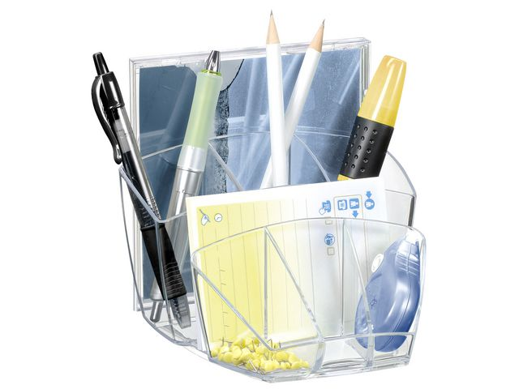
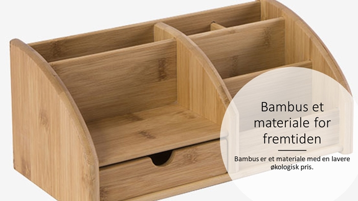

<!DOCTYPE html>
<html>
<head>
<title>konoto utstyr/title>
</head>
<body>

<h1>konoto utstyr</h1>


<p>
  Penneholder CEP Ice Transparent
  CEP Ice 580 i-pultordnersettet har en elegant, moderne formgivning som både er funksjonell og tar seg godt ut på kontoret, CEPs Ice-serie er en serie med gjennomsiktig tilbehør til arbeidsplassen med skarpt sort omriss, Settet er laget av resirkulerbar støtsikker polystyren og er en fin og praktisk løsning som bidrar til å holde det ryddig på pulten, CEP 580 i Ice pultordnersett har mer å by på enn en vanlig penneholder: 8 rom med plass til inntil 40 penner, 5 merkepenner og 2 CD-er, og ekstra tilbehør som binderser, viskelær og stifter, Dette pultordnersettet har et fint og universelt utseende og passer fint til alt av skrivemateriell fra CEPs elegante Ice-serie, – En del av CEPs elegante, moderne Ice-serie – Laget av resirkulerbart, støtsikkert polystyren – Bidrar til å holde det ryddig på arbeidsplassen – Rommer inntil 40 penner, 5 merkepenner og 2 CD-er – Med 3 rom til binderser og annet tilbehør – Farge: Gjennomsiktig sort – Størrelse: 143 x 158 x 93 mm

</p>
  
<p>
Penneholder HELIT Sort
Pennekopp med 4 rom Forskjellig dybde på rommene Mål Ø140xH100mm
</p>
</body>
</html>
